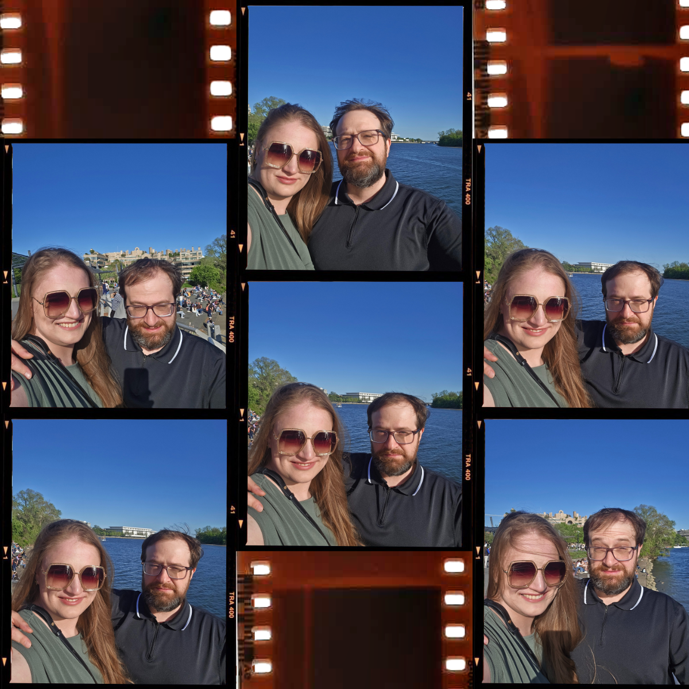
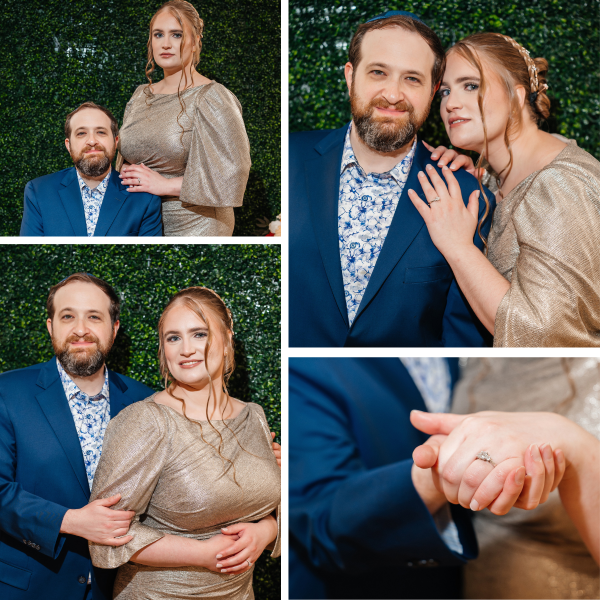
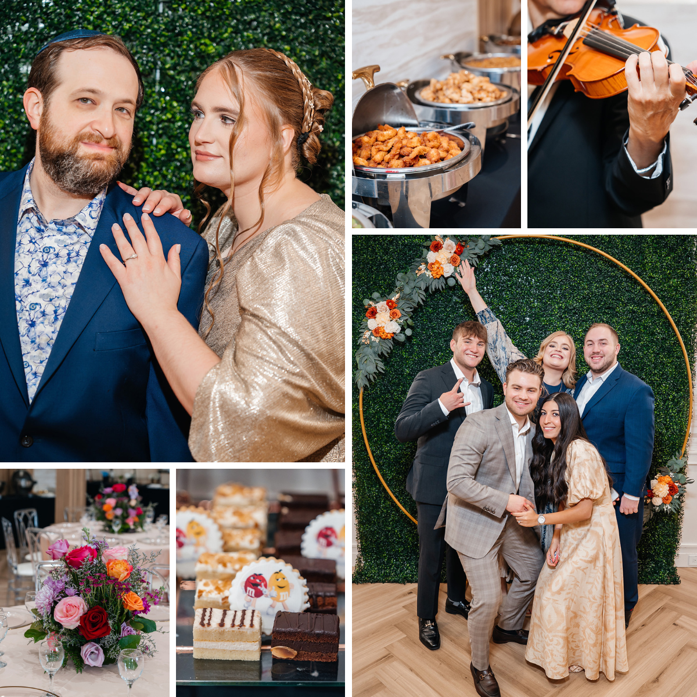

First Date
Rita came down to D.C., and we spent our first date walking along the National Mall after dinner.
Matthew’s never ending riffing suggested that the hollow-sounding central grate at the
D.C. War Memorial was the entrance to the Mole People Embassy.

Philadelphia Day Trip
Our third date was a day trip to Philadelphia, a mid-way point.

Morgan Library
Powered by Starbucks
We visited, for the first time, two locations that we now love: the Starbucks Reserve and Roastery (naturally, for anyone who knows Matthew), and The Morgan Library
First Shabbat Together
Rita invited herself over for Shabbat, and in hindsight, we’re both so happy she did! Rita had the chance to meet some of Matthew's friends.

Flipper Waddlesworth
For Chanukkah, Matthew sent Rita a stuffed penguin, who is now named Flipper Waddlesworth. Inspired by the song “Personal Penguin” by Sandra Boyton.
Now you know why we have penguins everywhere.

Meeting Fanya
Matthew came up to NYC and Rita hoster Shabbat dinner. Matthew got a chanse to meet Rita's sister, Fanya, and her friends.
Rita: I promise I wasn't torturing him.
Matt: The sun was in my eyes!

Opera Night – La Bohème
After Shabbat, we went to the Opera to see La Bohème. Rita's mother claims this was 'torturing' Matthew.
Meeting Rita's Parents
Matthew met Rita’s parents for the first time. Then we took a stroll to Ouri's kosher grocery store on 68th and 3rd. We both love grocery stores, but Matthew suspected Rita was showing him how great the kosher grocery stores are in New York City as proof of the city’s superiority. “This must be how Yeltsin felt,” he thought to himself.
Meeting Matthew’s Parents
Rita met Matthew’s parents for the first time, and later went together to the Kennedy Center to see the National Symphony.
Attending a Wedding Together
We attended a wedding together in Manchester-by-the-Sea, Massachusetts on Valentine’s Day. Rita met Matthew’s coworkers and their wives. They approved, and by approved, we mean “Insisted that Matthew lock that down immediately.”
Brother’s Wedding
Matthew met Rita’s whole family and community all in one go at her brother Ben’s wedding. He survived the gauntlet of new people, the blizzard of names, and the language barriers.
The Proposal
Matthew proposed to Rita at Next Door, in LA.
We're Enagaged!
L’chaim!
We celebrated with a Brooklyn-based Engagement Party, surrounded by the love and well wishes of family and friends.
M&M, for Margaret and Matthew of course!
Future Chapters
We hope to have you join us for as we begin the next chapters.